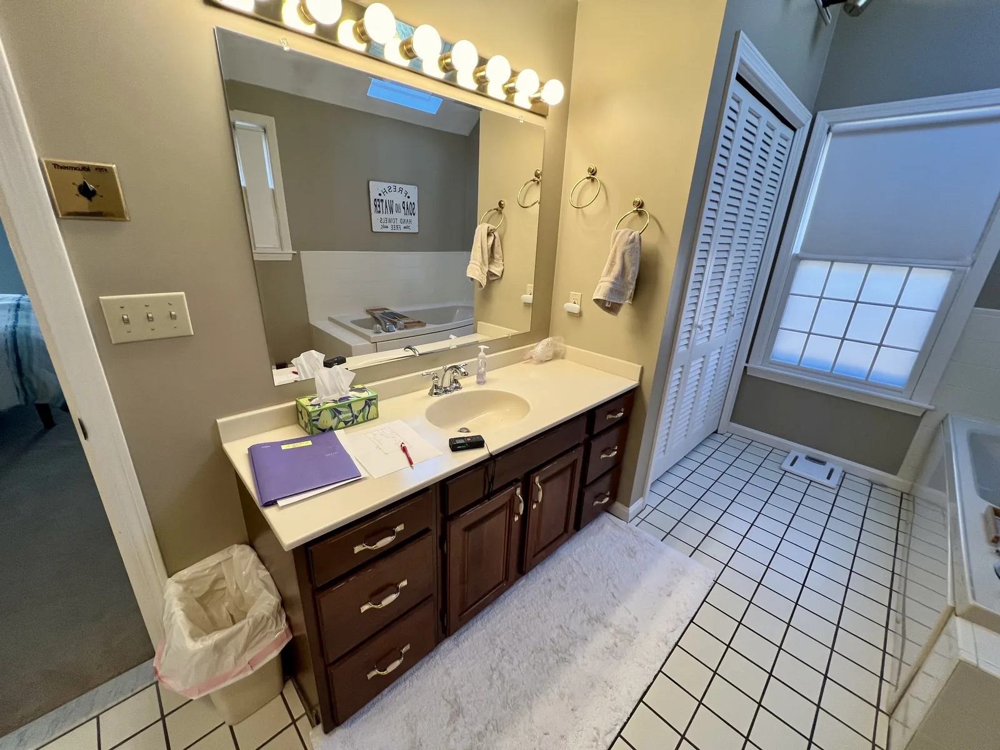
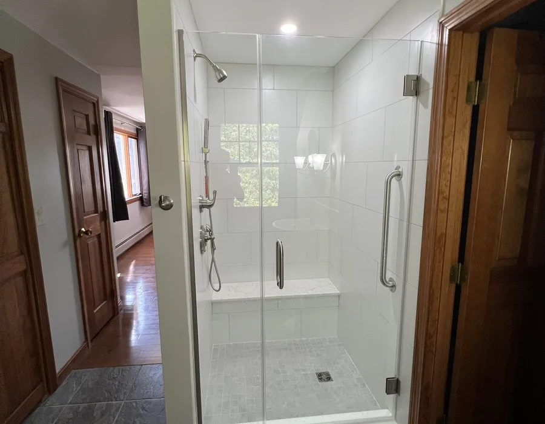
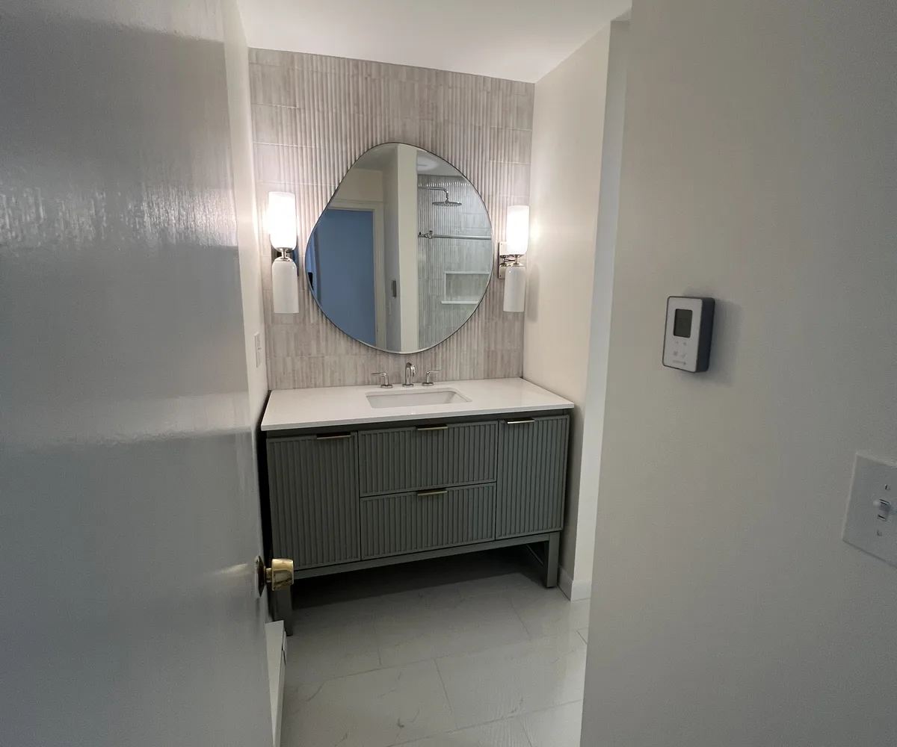

Newburyport bathroom renovations & remodel contractors
Bathroom remodeling Newburyport, MA: planned and built by DeFaria
Bathroom remodeling Newburyport, MA projects start with a written plan and an owner-led walkthrough. Bathroom renovations Newburyport MA homeowners can trust have to solve today's routine without making the room feel disconnected from the home's character. In Newburyport, renovation and remodeling mean the same owner-led rebuild by Luiz DeFaria.
Our work
A real DeFaria bathroom transformation
Watch a bathroom we remodeled, from the first step to the final detail.
Get a Free Estimate
Local search focus
Bathroom renovations Newburyport MA give modern function without losing the house
Bathroom renovations Newburyport MA homeowners plan well often start in a historic property, a compact home, a waterfront-influenced area or a room that has been modified more than once. This is Newburyport, Massachusetts on the Merrimack River in Essex County, where preserving character matters as much as the finished look.
DeFaria Construction keeps the estimate focused on sequence: what the home allows, what the bathroom needs and how finishes should be coordinated after the hidden work is understood.
- Bathroom remodel planning for 01950 homes where historic character and access can shape the scope.
- Trim, tile, ventilation and floor transitions reviewed before a finish package is promised.
- A controlled estimate path for compact rooms, waterfront influence and older-home updates.
City-specific planning
Newburyport bathrooms need restraint and construction discipline
Downtown Newburyport, Joppa and the South End can create different remodel questions, but many projects share the same risk: a new bathroom that looks updated yet ignores the constraints of the existing home.
The local copy makes that risk visible. Floor transitions, trim, fan routes, tile backing, fixture alignment and jobsite protection should all be discussed before the finish package becomes the plan.
- Respect historic character and existing trim language.
- Plan tile, ventilation and fixture alignment together.
- Protect tight access paths during construction.
- Make modern function feel natural inside the home.
Estimate drivers
What a Newburyport bathroom estimate should protect
The estimate should protect the home’s character and the homeowner’s confidence. That means identifying which details must be preserved, where hidden conditions may appear and how daily disruption will be controlled.
A contractor who can explain those items before work starts gives the homeowner a stronger reason to call than a gallery alone.
A Newburyport visitor should see a contractor thinking about preservation, access and construction order before asking for a design decision.
Project photos
Bathroom remodeling photos for Newburyport homeowners
Newburyport homeowners can use the photos to judge finish quality while reading how DeFaria protects older-home character during the work.



Cost
How much do bathroom renovations cost in Newburyport, MA?
Bathroom renovations in Newburyport, MA usually run from about $12,000 to $25,000 for a standard full renovation, and $25,000 to $45,000 or more for a large or high-end bathroom, or for a historic downtown home that needs careful preservation work. DeFaria gives a fixed, itemized estimate at the walkthrough, so the price reflects the real scope. The biggest cost drivers are usually moving plumbing or walls, the tile and stone selection, and how much hidden repair the demolition uncovers in an older home.
- Fixed, itemized estimate at the walkthrough.
- Historic-home preservation work priced in, not tacked on later.
- Clear explanation of what moves the number up or down.
Timeline
How long a Newburyport bathroom renovation usually takes
Most Newburyport bathroom renovations take about 2 to 4 weeks of on-site work once materials arrive, depending on the scope and whether the layout changes. In a historic downtown home, extra time may go into protecting original trim, floors and stairs during demolition and delivery. DeFaria sets a realistic sequence at the walkthrough instead of promising a date before the scope is clear.
- Realistic week-by-week schedule set at the walkthrough.
- Extra care for access and protection in historic homes.
- Inspections built into the sequence, not bolted on at the end.
Process
How a Newburyport bathroom renovation runs, step by step
DeFaria sequences demolition, plumbing and electrical rough-in, waterproofing, tile, fixtures and finish so the homeowner knows what happens each week. In an older Newburyport home, the demolition step matters most, because it reveals the hidden conditions behind the walls and floors that the estimate has to account for before finishes are ordered.
- Demolition and inspection of what is behind the walls.
- Rough-in, waterproofing and ventilation before tile.
- Tile, fixtures and finish, then a final walkthrough with you.
Historic homes
Renovating bathrooms in Newburyport's historic and Federal-era homes
Downtown Newburyport and the High Street district keep many Federal, Colonial and Victorian homes with original trim, plaster and tight stairwells. These homes bring hidden rot, old plumbing and uneven framing into a bathroom renovation. DeFaria opens the wet wall, documents what is behind the tile and plans structural and plumbing fixes while protecting the original character the homeowner wants to keep.
- Rot, framing and subfloor checks in historic homes.
- Old plumbing and venting updated where needed.
- Original trim and floors protected during the work.
Compact layouts
Making small Newburyport bathrooms feel bigger
Many Newburyport bathrooms are compact, especially in older downtown homes and condos. DeFaria plans layout, storage, lighting and fixture scale so a small bathroom feels open and works well, often without moving plumbing. Smart choices like a wall-hung vanity, a curbless shower, larger tile and better lighting can transform a tight room within its existing footprint.
- Layout and storage planned for tight footprints.
- Fixture scale and tile chosen to open up the room.
- Lighting layers that make a small bathroom feel bigger.
Waterproofing
Waterproofing and ventilation built for Newburyport homes
Near the Merrimack River and the coast, damp air and older-home construction put extra stress on a bathroom. DeFaria builds the waterproofing membrane, backer board, fan sizing and slope correctly the first time, so the tile and finishes last instead of failing behind the wall a few winters later. In historic homes, that often means correcting shortcuts left by earlier renovations.
- Proper waterproofing membrane and backer board behind the tile.
- Fan sizing and venting matched to river and coastal humidity.
- Correcting shortcuts from earlier renovations.
Layout
Walk-in showers, tubs and aging-in-place in Newburyport
Many Newburyport renovations swap a tired tub-shower combo for a larger walk-in shower, add a double vanity, or plan grab bars and a curbless entry for aging-in-place. DeFaria plans the plumbing, framing and waterproofing around the layout you actually want, so the finished bathroom fits how the household uses it now and for years ahead.
- Walk-in and curbless showers detailed for waterproofing.
- Vanity, storage and lighting planned around real use.
- Aging-in-place options like grab bars and safe entries.
Materials
Tile, vanities and fixtures that fit a Newburyport home
Material choices matter as much as the layout, especially when a bathroom sits inside a home with historic character. DeFaria helps Newburyport homeowners pick tile, grout, vanities, hardware and fixtures that resist moisture, clean easily and still feel right for the house, whether the goal is a period-sympathetic look downtown or a clean modern finish in a newer home.
- Moisture-resistant tile, grout and hardware.
- Period-sympathetic or modern finishes to match the home.
- Durable surfaces that clean easily for daily use.
Permits
Newburyport bathroom permits and inspections handled for you
A bathroom renovation in Newburyport that changes plumbing, electrical or layout runs through the City of Newburyport building department, and historic-district homes can carry extra review. DeFaria pulls the permits, schedules the inspections and keeps that step organized so scope, timeline and sign-offs stay realistic and the work passes inspection the first time.
- Permits pulled and inspections scheduled for you.
- Awareness of historic-district review where it applies.
- Owner-led communication through final inspection.
Local contractor
Working with a local Newburyport bathroom renovation contractor
DeFaria Construction is a licensed and insured local contractor with an A+ BBB rating and verified customer reviews, and every Newburyport project is owner-led by Luiz DeFaria from the first walkthrough to the final one. On historic and compact homes, that owner-led judgment is what protects the house while the bathroom is brought up to date, and it means you deal with the person responsible for the result instead of a rotating crew.
- Owner-led by Luiz DeFaria, walkthrough to final walkthrough.
- Licensed, insured and A+ BBB accredited.
- One point of contact who knows your project.
Value
What a Newburyport bathroom renovation adds to your home
In a strong market like Newburyport, a well-planned bathroom renovation returns value in daily comfort and in resale. DeFaria builds the estimate around durable materials, proper waterproofing and a layout that works for years, so the investment holds up instead of dating quickly or failing behind the tile. Buyers here notice quality finishes and a bathroom that respects the home, which is exactly what an owner-led renovation delivers.
- Durable materials and waterproofing for the long term.
- Itemized estimate so you see where the budget goes.
- Finish quality that supports resale in Newburyport.
Waterfront
Bathroom renovations for Joppa and waterfront-influenced homes
Homes in Joppa and along the South End sit close to the water, where damp air and older construction raise the bar on moisture control and materials. DeFaria plans ventilation, waterproofing and corrosion-resistant hardware for these waterfront-influenced Newburyport bathrooms, so the finish holds up to the environment and not just to a photo.
- Extra moisture control for waterfront-influenced homes.
- Corrosion-resistant hardware and finishes.
- Ventilation planned for damp river and coastal air.
Getting started
Getting a free estimate for your Newburyport bathroom renovation
Getting started is simple: DeFaria visits the home, looks at the existing bathroom, listens to what you want and gives a fixed, itemized estimate for the renovation. There is no obligation, and the walkthrough is the moment to raise questions about scope, materials, timeline and how the home will be protected during the work.
- Free, no-obligation walkthrough and estimate.
- Honest scope, timeline and material guidance.
- One clear next step to move your project forward.
Areas covered
Bathroom renovations across Newburyport neighborhoods and ZIP codes
DeFaria Construction supports Newburyport bathroom remodeling in 01950, including compact rooms, historic properties, Joppa, Downtown and South End homes.
- Downtown Newburyport
- Joppa
- South End
- Merrimac Street corridor
- 01950
Older paint
Lead-safe bathroom remodeling in Newburyport's pre-1978 homes
Most of Newburyport's housing was built long before 1978, from Federal-era houses on High Street to Victorian and early 1900s homes in the South End and North End. Painted trim, window casings, old doors and plaster in those bathrooms can contain lead. Federal and Massachusetts rules require renovation that disturbs those surfaces in a pre-1978 home to follow lead-safe practices: containment, careful demolition, cleanup and verification.
We ask about the age of the house and any past lead testing during the walkthrough. When the bathroom still has original trim or plaster, we seal the work area, protect the path to the door and plan demolition so dust stays where it belongs. If children live in or visit the home, this step matters even more, and it is one most quick quotes leave out.
Plaster and framing
Plaster walls and old framing behind Newburyport bathrooms
Open a wall in an older Newburyport house and you may find horsehair plaster on wood lath, timber framing with irregular spacing, or balloon framing where the wall cavity runs from the basement to the attic. Each one changes how we demolish, how we run plumbing and electrical, and how we tie new work into old.
Balloon framed walls need fire blocking added where the new work opens them, and old plaster has to be cut back cleanly so the adjoining rooms are not cracked by vibration. Uneven studs are shimmed or furred out so tile walls end up flat and the shower glass fits. These are the hours that never show in a photo, yet they decide whether a Newburyport bathroom stays crack free for decades.
Historic character
Keeping historic character when the work touches the outside of the house
Interior bathroom work in Newburyport is mostly a building, plumbing and electrical permit matter. The questions start when the project touches the exterior, such as a new window, a relocated vent cap or a dryer and fan termination on a street facing wall. Some Newburyport properties carry preservation restrictions or sit in areas where exterior changes are reviewed, so we confirm with the city before we commit to a vent route.
Inside, character is a design choice. Many owners of Federal and Victorian homes want a new shower and better ventilation without losing original trim, a period window or a clawfoot tub. We plan around those pieces, protect them during the work and match new casing to old profiles so the bathroom still feels like part of the house.
Downtown logistics
Parking, dumpsters and access for South End and downtown bathrooms
Many Newburyport homes downtown, in the South End and along the side streets off High Street have little or no driveway, narrow sidewalks and steep, tight staircases. That affects the job more than most homeowners expect. A dumpster or a delivery truck on a city street may need permission, and tile, a vanity or a cast iron tub has to be carried up stairs that were built two centuries ago.
We plan the logistics before demolition: where the container goes, how materials are staged, how the stairs and floors are protected and how neighbors are kept in the loop. Smaller loads and a covered trailer often work better than a large dumpster on a busy block. It is a detail that keeps the project friendly with the street and on schedule.
Plum Island and the waterfront
Plum Island bathrooms, flood zones and salt air
The Newburyport side of Plum Island and the waterfront along the Merrimack face salt air, wind driven rain and, in some locations, FEMA flood hazard zones. Salt corrodes cheap fixtures, fan grilles and hardware quickly, so we lean toward solid brass valves, quality finishes and stainless fasteners, plus a fan ducted outside with a damper that seals.
If a house is in a flood zone, the city can compare the cost of improvements with the value of the building. Under the National Flood Insurance Program, improvements reaching about half of the structure's value can be treated as a substantial improvement, which may require bringing the building up to current flood standards. A single bathroom rarely gets there, but a larger renovation can, so we check before permits.
Winter planning
Planning a Newburyport bathroom renovation around a New England winter
Wind off the Merrimack and the ocean finds every gap in an old exterior wall. When a shower or vanity sits on an outside wall, we look at how supply lines are routed and insulated before the wall is closed, because a frozen line in February can ruin a new bathroom and the ceiling below it.
Cold weather also affects curing. Waterproofing membranes, thinset and grout need the room held at a steady temperature, so in winter we keep the space heated and plan deliveries around storms. A walkthrough in the fall lets you choose tile and fixtures early and start in winter, when crews are easier to schedule than in spring.
Warm floors
Heated floors and warmer bathrooms in older Newburyport homes
Bathrooms in older Newburyport houses are often the coldest rooms in the home, with a single radiator or baseboard that was never sized for a tiled floor. Electric radiant heat under the tile is one of the most requested upgrades we price, because it warms the floor without taking wall space and runs on its own thermostat. It goes in after the subfloor and before the tile, so it has to be decided before the tile order.
We check the electrical panel and the circuit first, since radiant mats, a towel warmer and a quality fan can add load to an old service. Where an original cast iron radiator is part of the room's character, we can keep it, have it refinished and plan the layout around it. A warm floor, a fan that clears steam and a tight exterior wall together make the room comfortable in a North Shore January.
Licensing
Licenses to check before you hire a Newburyport bathroom contractor
In Massachusetts, a contractor working on an owner occupied home of one to four units should hold a Home Improvement Contractor registration, and structural work such as moving a wall or reframing a floor requires a Construction Supervisor License. Plumbing is permitted and performed by a licensed plumber, and electrical by a licensed electrician. All of them can be looked up on state websites in minutes.
The state plumbing code expects shower valves to protect against scalding, and bathroom circuits need ground fault protection. When exterior walls are opened, energy code requirements for insulation and air sealing can apply. Ask every contractor you are comparing who pulls each permit. A clear answer protects you at resale, when a buyer's inspector asks how the bathroom was done.
Comparing quotes
How to compare bathroom remodeling quotes in Newburyport
Two Newburyport quotes for the same bathroom can be far apart, and the lower number often leaves things out. Compare line by line: demolition and disposal, lead-safe work if the house is older, framing and subfloor repair, the waterproofing system by name, fan size and where it vents, plumbing and electrical permits, tile setting method, trim, paint and cleanup.
Ask how hidden conditions are handled once walls are open, how changes are priced and who runs the job day to day. DeFaria Construction gives a written, itemized estimate after an owner-led walkthrough with Luiz DeFaria, and anything found behind the walls is explained with photos and a price before extra work is approved.
Nearby towns
Bathroom remodeling in Newburyport and the towns around it
Newburyport shares house types and coastal conditions with its neighbors. If you want to compare how we plan bathrooms nearby, see our pages for bathroom remodeling in Newbury, MA, bathroom renovation in Salisbury, MA and bathroom remodeling in Rowley, MA.
For the full process, including design choices, tile, waterproofing and the steps of a typical project, visit our main bathroom remodeling service page. The same owner-led estimate applies in Joppa, downtown, the South End or on Plum Island.
Experience
Why this Newburyport page is built for real homeowners, not just keywords
For Newburyport, DeFaria’s authority is the ability to respect the home while improving the room. The page makes that construction judgment visible before the phone call.
Newburyport changes the page because the remodel often has to add modern function without making the bathroom feel disconnected from the home.
Call (617) 893-2221 for a free estimateFAQ
Common questions about bathroom renovations in Newburyport, MA
Are bathroom renovations the same as a bathroom remodel in Newburyport, MA?
Yes. In Newburyport, MA bathroom renovations and a bathroom remodel describe the same rebuild: waterproofing, ventilation, tile, vanities, fixtures, trim and finish. DeFaria Construction uses both terms for the same owner-led, itemized scope, planned carefully for historic and compact homes.
What bathroom renovation work is common in Newburyport homes?
Newburyport bathroom projects may involve compact layout planning, ventilation, waterproofing, floor transitions, tile work, fixtures and careful trim coordination.
Can DeFaria handle bathroom remodeling in historic Newburyport homes?
Yes. DeFaria can plan bathroom renovations around older-home details, access limits, finish transitions and moisture control.
Does the page cover the 01950 ZIP code?
Yes. This bathroom remodeling page is written for Newburyport homeowners in the 01950 area.
What should Newburyport homeowners clarify before starting?
They should clarify waterproofing, ventilation, floor condition, fixture placement, trim transitions and how the home will be protected during work.
Is lead-safe work required for a bathroom remodel in an older Newburyport home?
If the house was built before 1978 and the work disturbs painted surfaces, yes. We plan containment, careful demolition and cleanup as part of the estimate.
Do I need city approval to change a bathroom vent on a Newburyport street-facing wall?
It depends on the property. Some homes carry preservation restrictions or exterior review, so we confirm with the city before committing to a new vent or window.
Can a bathroom remodel on Plum Island trigger flood zone rules?
It can if the home is in a FEMA flood hazard area and total improvements reach about half of the building's value. We check flood zone status before permits.
How do you handle parking and dumpsters for South End and downtown Newburyport homes?
We plan logistics before demolition, use smaller loads or a covered trailer when the street is tight, and confirm any permission needed for a container on a city street.